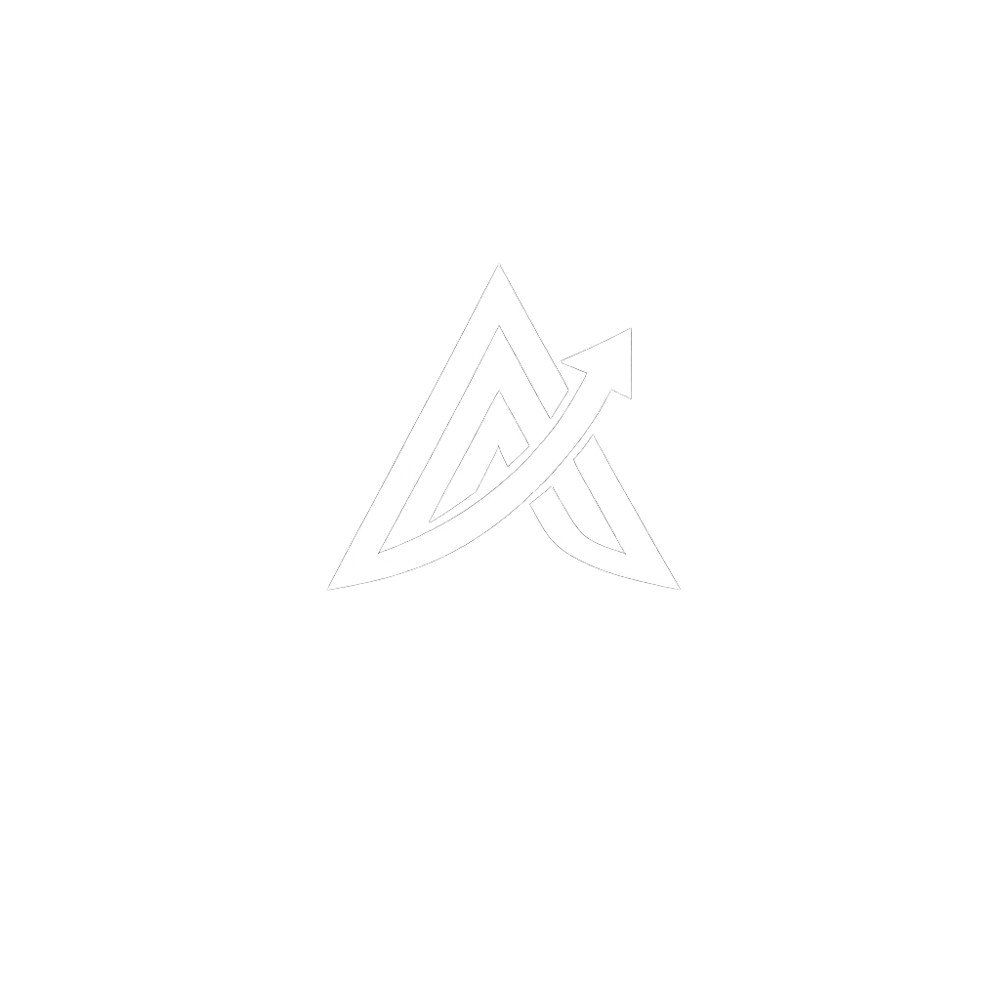

LA IMPLICACIÓN
"
El trono de la IA ya no se gana con respuestas bonitas: se gana con
trabajo terminado
.
Superhuman lo leyó como el regreso de OpenAI al liderazgo. La señal más fuerte: mejores resultados en tareas largas, con herramientas y menos tokens.
LO QUE VIENE
La carrera ahora es por agentes que puedan operar tu computador de punta a punta.
5.5